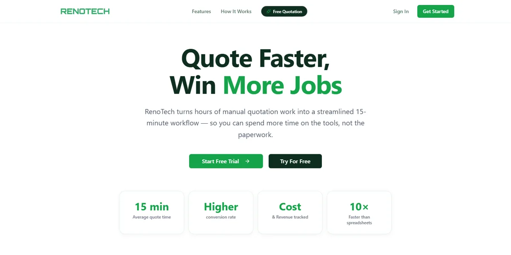

Languages and backend
- Go
- Gin
- TypeScript
- JavaScript
Hi there, I'm
I build Go microservices, Kafka pipelines and React frontends for a multi-tenant fintech platform in Kuala Lumpur.

I'm a backend-focused developer at COS Great Trading, where I've spent the past two years building a production multi-tenant fintech SaaS platform that serves 5 brokers.
I designed and delivered 6 Go microservices end to end, from system design through deployment. My day-to-day sits around Apache Kafka, MongoDB, Apache Doris and QuestDB, with React 19 and TypeScript when a feature needs a frontend.
Outside work I'm building Renotech, a quotation platform for renovation contractors in Malaysia.
Go is my primary language. The rest is what I reach for to ship and run it.
Dec 2025 - Present
RenotechIndependent SaaS
Jun 2024 - Present
COS Great TradingKuala Lumpur, Malaysia
Graduated 2024
YPC International Collegein partnership with Liverpool John Moores University (UK)
One product I run myself, and two systems I designed and shipped in production.

A SaaS platform that turns hours of manual quotation work for Malaysian renovation contractors into a 15-minute workflow. I built it end to end and run it in production.
Visit live siteA Go microservice for customer onboarding on a multi-tenant broker platform. It integrates a third-party liveness detection service, stores verification records in MongoDB and publishes status changes to Kafka so downstream services react in real time.
Case studyA reporting pipeline in Go that pairs a scheduled batch repopulation service with a real-time Kafka consumer. Idempotent deduplication keeps figures correct when events are replayed or arrive twice, with MongoDB as the store.
Case studyHave a role or a project in mind? Send me an email and I'll get back to you.